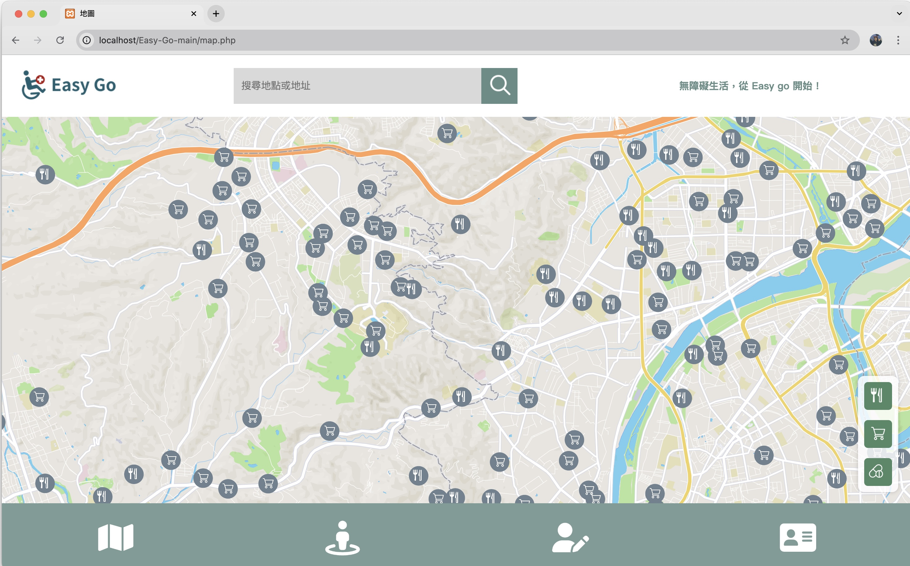
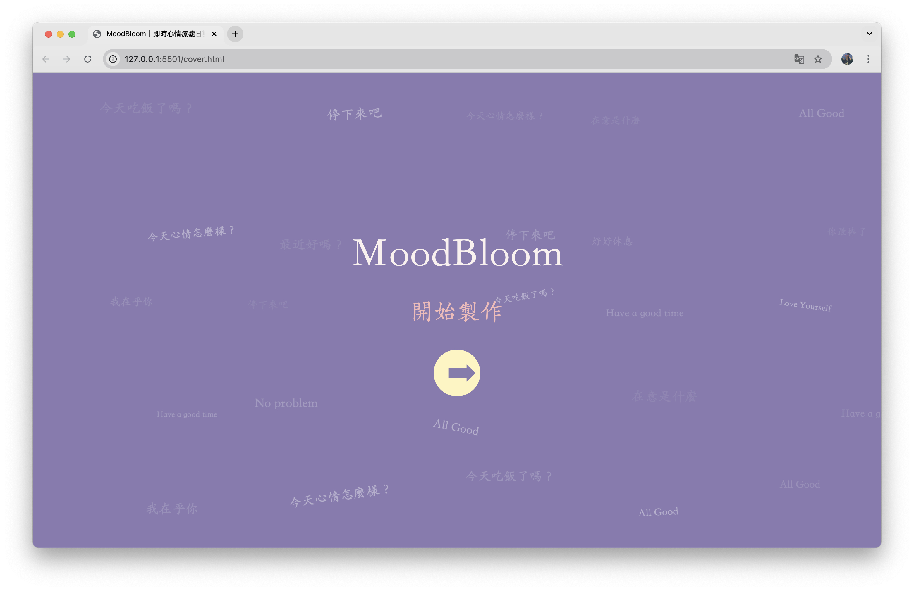
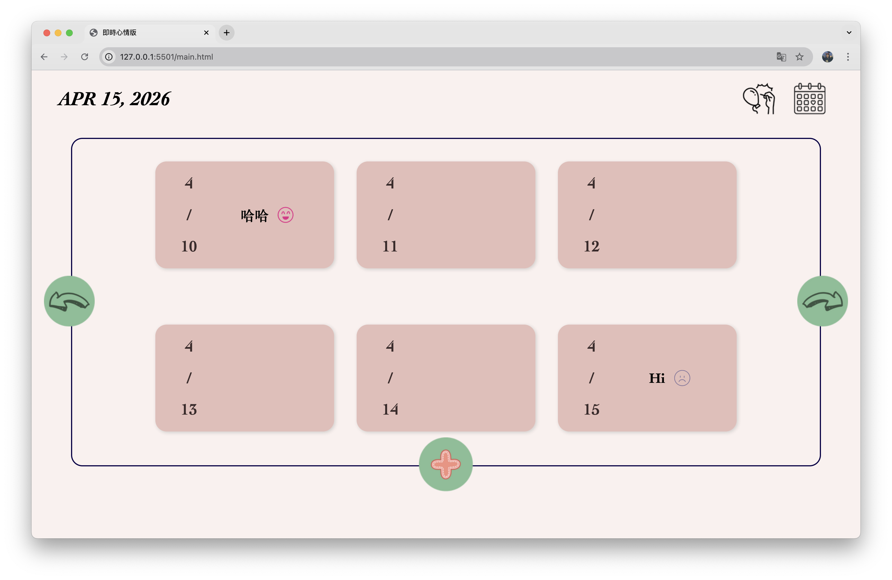
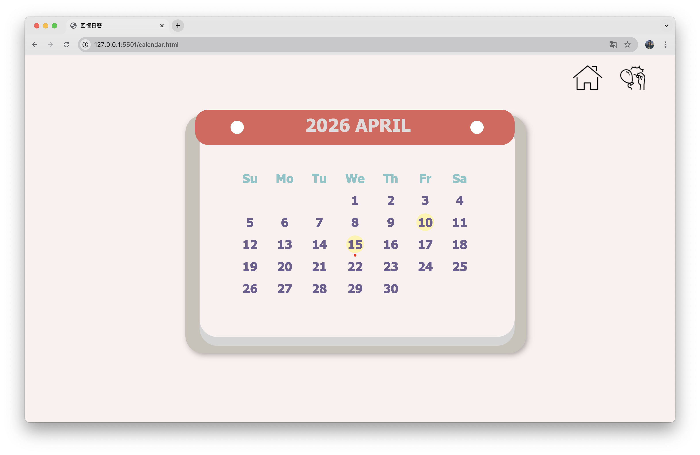
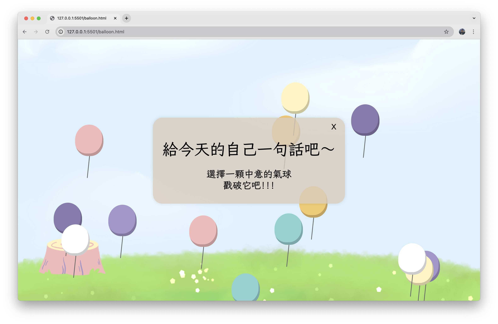
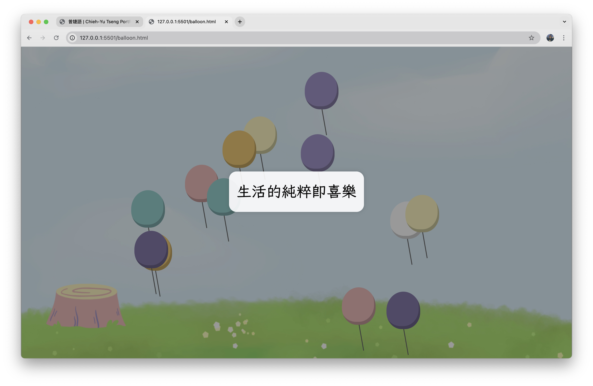
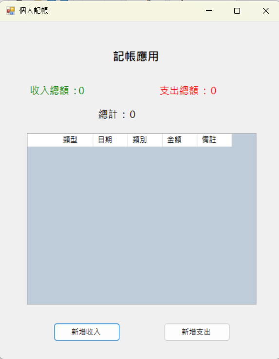
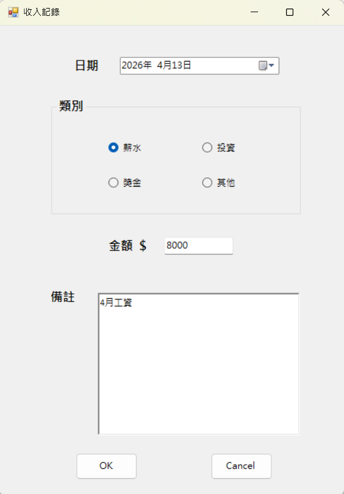
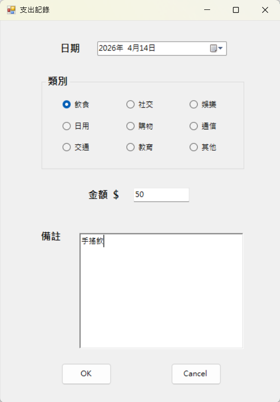
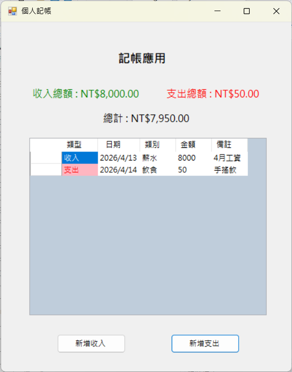

Easy-Go 為無障礙資訊整合平台，提供行動不便者與銀髮族快速查詢周邊設施服務。 使用者可透過互動式地圖查詢坡道、自動門、電梯與無障礙廁所等資訊， 並透過回報與留言機制更新實際使用狀況，建立即時且可信的無障礙資訊系統。
在此專案中，我主要負責 前端介面設計、使用者回報機制設計與 後端資料管理， 透過系統化資訊整合提升使用便利性與即時性。
技術： HTML / CSS / JavaScript / SQLite / API Design / System Integration
GitHub 展示影片




本專案為以 情緒紀錄與自我療癒 為核心概念的互動式網頁， 提供使用者記錄每日心情、撰寫日記、上傳照片與選擇 emoji， 並透過溫暖療癒風格介面提升使用體驗。
系統包含 心情時光軸、日曆式回顧 與 戳氣球獲得正能量語錄 的互動小遊戲， 結合 UI 動畫與前端互動設計，打造兼具功能性與情緒陪伴的數位日記平台。
技術： HTML / CSS / JavaScript / JSON / UI Animation
GitHub



本專案為使用 C# Windows Forms 開發之個人記帳系統， 提供使用者記錄收入與支出，並透過分類、日期與備註進行財務管理。 系統採用事件驅動設計，並以 List 結構管理資料。
使用者可新增支出或收入資料，並依照不同類別（飲食、交通、娛樂等）進行分類， 系統會即時更新資料清單，提升操作效率與可視化管理能力。
技術： C# / Windows Forms / 物件導向程式設計 / 事件驅動程式設計
GitHub